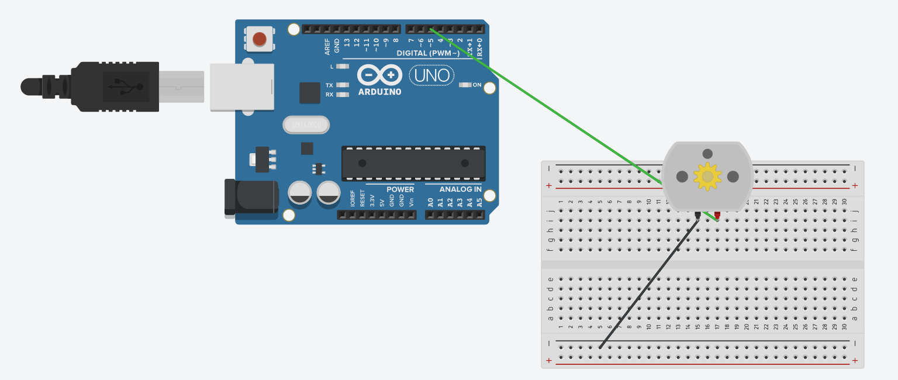
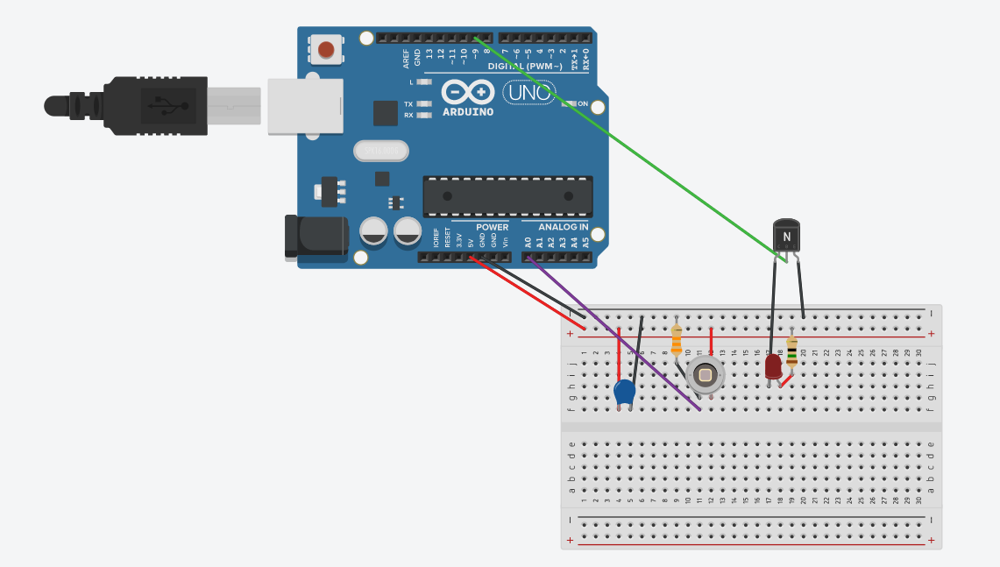
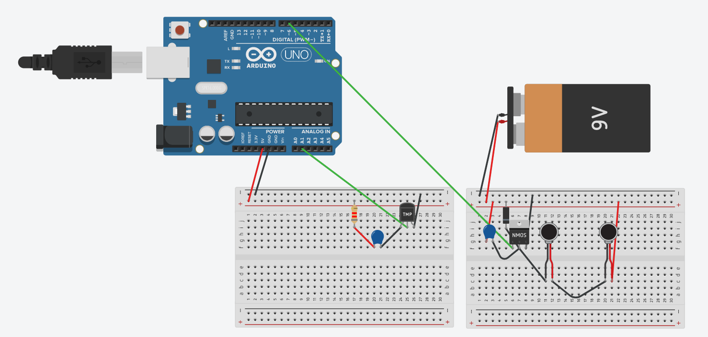
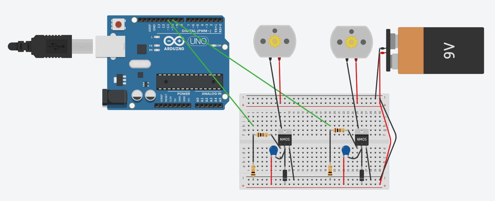
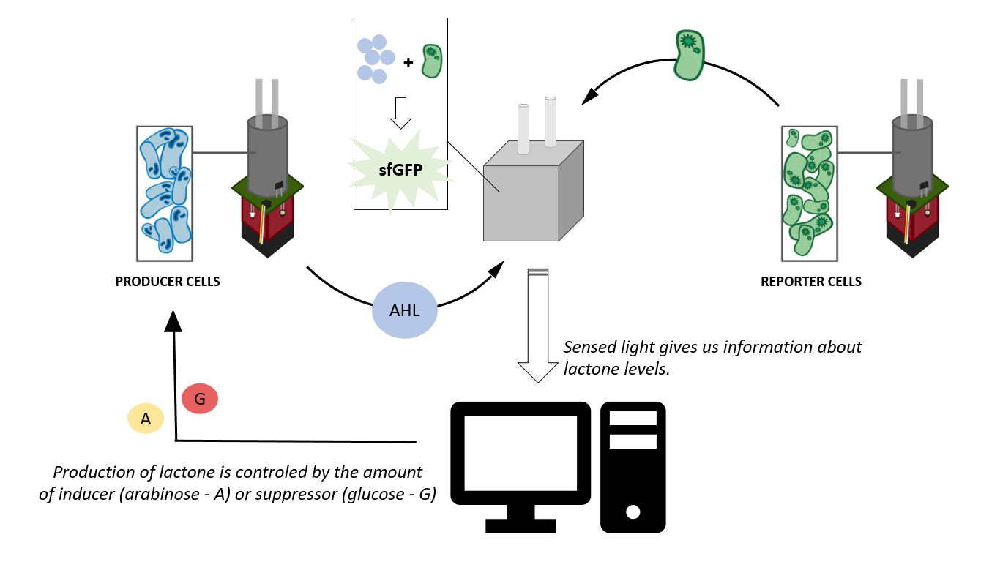

Engineering aim
What is the engineering aim of our turbidostat?
In order to perform a long-lasting in vitro demonstration of our proof of concept feedback system we constructed a turbidostat. This culture device ensures that the experiment conditions (cell density, temperature…) are constant over time. Meaning that we need to keep a constant concentration on the producer and the reporter cells, as changes in the OD would affect the relation between lactone and sfGFP concentrations and, therefore, feedback could not be achieved in a consistent way.
Inspiration
Where the inspiration for our turbidostat came from?
Living organisms exist in complex environments, which have certain conditions that favor their correct growth. Automated cell growth systems are capable of mimicking these conditions by adjusting variables such as temperature or Optical Density (OD) in order to maintain constant growth rates. Among them, there are DIY turbidostats such as the eVOLVER that are composed of open-source wetware, hardware and software. In particular, our hardware design is inspired by the eVolver multi modular platform.
Maintaining the OD at a constant value is a key factor in these systems because it allows to have a rigorous and precise control of the living organisms inside, while not letting the cells get saturated and limited by the available resources.
Main foundations
What are the main foundations of our turbidostat?
Our hardware design (inspired by eVolver) mainly contains 3 modules:
Sleeve
Fluidic module
Electronics module
Sleeve
When it comes to the first one of these three modules, the sleeve, it can be more deeply detailed attending to its four components. First of all, in order to accomplish the optimal temperature requirements of a cell culture to grow properly (about 37º C) an aluminum tube is included with the aim of transmitting heat from the external thick film heating resistors to the glass vial. Aluminum alloy 6060-T6 is chosen as the material for the tube due to its high thermal conductivity (~209 W/m*K). Moreover, a 3D-printed piece is placed ringing the bottom part of the tube, its function is to house the 600 nm LED and its respective photodiode, both needed to know the optical density (OD) of the culture inside the vial. These two components are located in tunnels through the piece aiming to avoid as much external visible light as possible which would entail interferences in the signal received by the photodiode. Furthermore, a 12V computer fan is placed at the bottom part of the sleeve, this component is dedicated to keep the density of the cells homogeneous into the culture so that the values obtained for the OD are representative. To do so a stirring magnet is introduced into the vial and two small disc magnets are glued at the top of the fan, therefore when the fan starts spinning the culture inside the vial also spins thanks to the stirring magnet. Finally, a double methacrylate layer between the fan and the tube with the vial separates the disc magnets from the bottom of the vial to avoid friction when the fan is switched on.
Electronics module
What about the electronic module?
In this section a more detailed description of the circuits used for the management of the turbidostat can be found. Each subsection contains a schematic image and a brief description of the components. It has to be taken into account that despite images here show a breadboard for the circuit integration, in the real implementation of the turbidostat stripboards are also used.
Fan circuit

This first image shows the simplest circuit, which is just the fan directly connected to one of the Pulse Width Modulation (PWM) outputs of the Arduino. PWM allows the user to create analog outputs going from 0 to 5 V by introducing a digit from 0 to 255, in this case since we do not need a really high power to move the fan at a speed that makes the stirring magnet rotate no external voltage source is demanded. In fact, the analog digit used is 200, which implies using around 3.9 V. For our implementation the Qualtek FAD1-04020CBHW11 12 VDC computer fan is used.
Led-photodiode circuit

This circuit like the one of the LED & Photodiode contains two different parts which are electronically independent but functionally correlated. Regarding the right breadboard which is the one that has to do with the heating resistors, they are connected in series and their power is regulated by a transistor. The left pin of the transistor is the gate, being therefore connected to one of the PWM Arduino outputs. The right pin is the source, which is directly connected to ground. Finally, the middle pin . Of course the order of the pins can vary depending on the transistor, the one that has been used for our project is a MOSFET IRL540N.
Thermistor-heating resistors circuit

Peristaltic pumps circuit

Complete fluidic system
Is the development of a turbidostat the final step?
No, not at all, the final goal is to build a whole circuit of connections in order to prove the proper functioning of the feedback loop, however due to several constraints (time, pandemics situation etc.) this has not been possible. Ideally the hardware part should contain two turbidostats and another structure for sensing, thus one turbidostat would contain a culture of the producer cells and the other a culture of the reporter cells (please for further details about the cells visit proof of concept). These two turbidostats would be connected via peristaltic pumps with the third structure, which would receive lactone from the turbidostat of the producer cells and reporter cells from the other turbidostat. Since reporter cells produce sfGFP in the presence of lactone the third structure would be devoted to sense this light and close the loop regulating the lactone to be produced. The amount of lactone can be induced by adding more or less arabinose to the producer cells or also by adding glucose that acts as a suppressor.
A sketch of the proposed implementation can be found below.
FOLLOW US